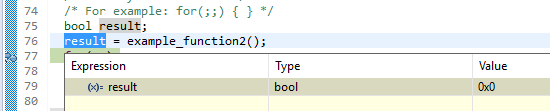
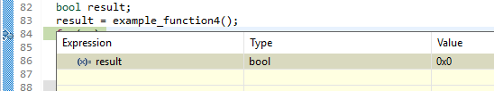
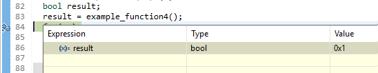
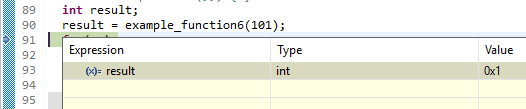
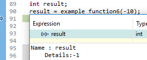
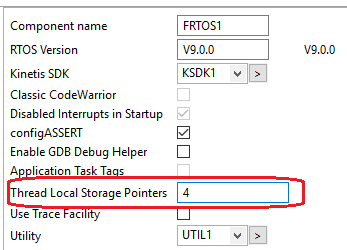
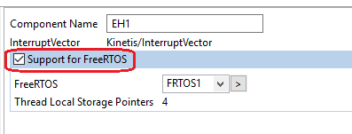

| ExceptionsHandler | |
|
|

Next you will find examples that how this component works.
- Find faults on debug time.
- Handle faults on runtime.
- Generate custom exceptions.
- Handling multiple exceptions.
- Handling exceptions on FreeRTOS.
This functionality is always active when the code is not inside try block.
Example code:
void example_function() {
char *p = NULL;
*p = 0; //Error line
}
Call the function from main() function and debug.
The execution will stop in this function:

Follow the procedure described:
Active "Instruction Stepping Mode":

And this window will apear.

Press "F5" key two times:
And the IDE will shows you the line that causes the fault.

To handle the faults on runtime its necesary use try/catch block.
Example code:
void example_function() {
char *pt = NULL;
*pt = 4;
}
bool example_function2() {
try {
example_function();
} catch {
ClearException();
return FALSE;
}
return TRUE;
}
On main() function paste this code:
bool result; result = example_function2(); for(;;);
Stop the execution on for line and check result value:
You will see that result value is FALSE, which means that the fault was handled on runtime.
The user can generate custom exceptions througt a macro with value bigger than 1.
Example code:
#define CustomException 3
int example_function3(int num) {
if(num > 10) {
throw(CustomException);
}
return num * 2;
}
bool example_function4() {
int a = 20, b;
try {
b = example_function3(a);
} catch {
b = 0;
ClearException();
return FALSE;
}
return TRUE;
}
On main() function paste this code:
bool result; result = example_function4(); for(;;);
Stop the execution on for line and check result value:
You will see that result value is FALSE, which means that the fault was handled on runtime.
If you change a value to 5 you will see that result value is TRUE
Wich means that no exception was generated.
It could be used multiple exceptions and know what exception was generated.
Example code:
#define OverLimitException 4
#define UnderLimitException 5
int example_function5(int num) {
if(num < 0) {
throw(UnderLimitException);
} else if(num > 100) {
throw(OverLimitException);
}
return 100 - num;
}
int example_function6(int percent) {
int percent2;
Exception ex;
try {
percent2 = example_function5(percent);
} catch {
ex = GetException();
ClearException();
if(ex == UnderLimitException) {
return -1;
} else if(ex == OverLimitException) {
return 1;
}
}
return 0;
}
On main() function paste this code:
int result; result = example_function6(101); for(;;);
Stop the execution on for line and check result value:
The value is 1 wich means that OverLimitException was generated.
Now change the parameter of example_function6 to -10.
The value is -1 wich means that UnderLimitException was generated.
To use this component with FreeRTOS it is necesary configure both components.
On FreeRTOS component change Thread Local Storage Pointer value to 4.
On ExceptionsHandler component check Support for FreeRTOS option.
Finally generate the Processor Expert code.